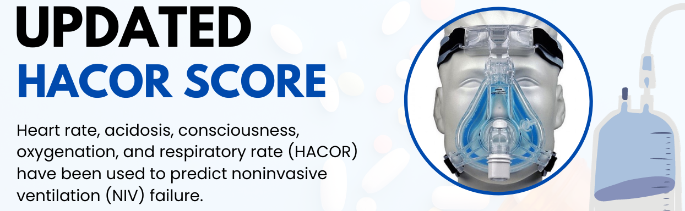

Heart Rate:
≤ 120 bpm
≥ 121 bpm
pH:
≥ 7.35
7.30 - 7.34
7.25 - 7.29
< 7.25
Glasgow Coma Scale:
15
13 - 14
11 - 12
≤ 10
PaO
2
/FiO
2
:
> 201
176 - 200
151 - 175
126 - 150
101 - 125
≤ 100
RR:
≤ 30
31 - 35
36 - 40
41 - 45
≥ 46
* SOFA Score:
Diagnosis of Pneumonia:
Diagnosis of Cardiogenic Pulmonary Edema:
Pulmonary ARDS:
Immunosuppression:
Septic Shock:
Clear
Calculate
HACOR Score:
Score
Risk
Rate of failure
≤ 7
Low
12.4%
7.5 - 10.5
Moderate
38.2%
11 - 14
High
67.1%
> 14
Very High
83.7%